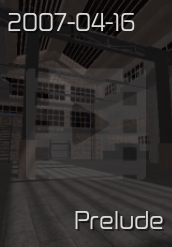
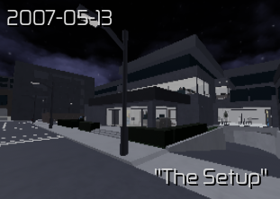
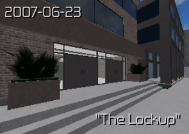
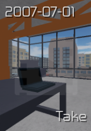
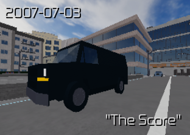
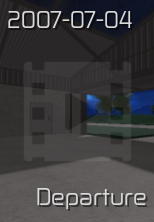

ENTRY POINT
Prelude is the first cutscene of The Freelance Heists expansion. It takes place on April 16th, 2007, and is the first cutscene chronologically. Unlike the other Freelance Heists cutscenes, Prelude can be viewed without having to buy the gamepass.The Freelancer and Harvey are standing in front of an abandoned building at night. They have been forced to meet with The Broker who has apparently blackmailed both of them. Harvey says some encouraging words to the Freelancer, who has their custom Raven at their side.Inside the building they find Jade and Dmitry, two criminals that were also blackmailed into working for The Broker. Jade explains how The Broker has a job planned for them and that they'll have to work together to complete it. Suddenly a monitor turns on and multiple texts appear, telling them that they'll lose everything if they walk away and that The Broker will contact them soon.
The Setup was released as part of "The Freelance Heists" expansion on January 16th, 2021. It is the first mission of the expansion and the first mission chronologically.In the mission The Freelancer is tasked with infiltrating a security company to find out more about one of their contracts and to tag their security trucks with trackers. To cover up the break in, they also empty the company safe. The mission is coordinated by Harvey and Jade.The mission takes place at night in the middle of the city. You spawn in front of the main building on the side of the road. The building has a locked entrance at the front and various sensor doors on both sides. To the left is a parking lot and a small walkway which gives you access to the top of the building. On the right there is a ramp leading to the underground garage. There is also a small balcony with a ladder which can be accessed from inside.The building has 2 floors and a basement. The floors consist of office space, a break room, a locker room and stairs. There are also 4 small rooms locked by a keycard door, 2 of them on the ground floor and the other 2 on the upper floor. The one on the upper floor next to the stairs will always be the IT room, while the other 3 are random with each of them containing either the safe, the servers or the camera operator.
The lockup is the second mission in the "Freelance Heist"expansion this mission takes place on june 23rd,2007.on this mission you will need to find the guns that belong to Armera.The guns are located on the basement of the lockup.to get the guns you will need to open cells which then after searching the inside there is a chance you will get the guns.After you get all the guns you will need to put it in the trunk of a police car,once all gun is in the trunk you may escape
Take is the second cutscene of The Freelance Heists expansion. It takes place on July 1st, 2007, and is the second cutscene chronologically.After some snooping around by Harvey, it has come to the group's attention that the gold they will be stealing from the trucks is worth twenty million dollars. Jade proposes that they take gold for themselves without sharing any with The Broker as if they do, they will be dead. Jade reassures Dmitry when he express concern by stating that it will help him and his family. Everyone else then agrees with the plan.Harvey and the Freelancer then have a private discussion, the Freelancer expresses some uncertainty about the plan but Harvey tells them that life is short so they must make the most of it. The Freelancer then fully agrees with the plan.
The score is the final mission of the freelance heist expansion.On this mission you will rob the trucks that you have tagged in the mission The setup.players will rob the truck by breaching it they will have 4 ways to breach the trucks (drill 2 spots at the trucks back door,blowtorch the back door of the truck,use the thumper to open it,use the c4 to blow it up).After the palyer have breached the trucks they will need to take all the gold to the elevator.Once all the gold is in the elevator the swat team will jam the elevator so you will need to pry it open.After prying it open you will need to take all the gold to the helipad.After all gold is in the helipad Dmitry will help you escape.
Deperture is the final cutscene in the freelance heist expansion where the freelancer,harvey,jade,and dmitry gather up in a warehouse.The warehouse has the gold that was stolen from the score mission.At the departure cutscene the freelancer and harvey betrayed jade and dmitry.After the betrayal harver will try to shoot the freelancer to claim the gold for himself.Harvey fail to kill the freelancer once he was on the floor the freelancer (player) is given 2 option either to shoot harvey or spare harvey.If the freelancer choose to shoot harvey the freelancer would just walk away due to the freelancer is unable to transport the gold.